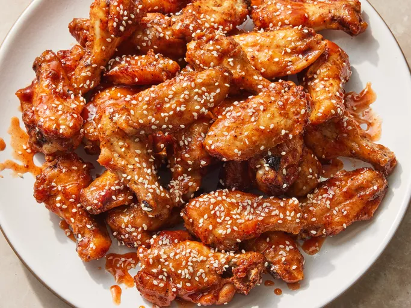

Honey Sriracha Wings

Description
These glazed honey sriracha wings are delicious, but incredible easy to make. The sauce itself is actually an afterthough compared to the importance of the technique in coating the chicken wings with a baking powder laced spice rub. Through the magic of chemical reactions, the surface of the chicken becomes dry making it extra crispy.
Ingredients
- 2 tablespoons baking powder
- 1 tablespoon kosher salt
- 1 teaspoon freshly ground black pepper
- 1 teaspoon smoked paprika
- 2 1/2 pounds chicken wing sections
- 1/3 cup honey
- 1/3 cup sriracha sauce
- 1 tablespoon seasoned rice vinegar
- 1/4 teaspoon sesame oil
- 1 pinch sesame seeds
Steps
- Preheat the oven to 425 degrees F. Line a baking sheet with aluminum foil and place an oven-proof wire rack over the foil.
- Whisk baking powder, salt, black pepper, and paprika together in a small bowl.
- Place chicken wings in a large bowl. Sprinkle 1/2 of the baking powder mixture over wings and toss to coat. Repeat with remaining baking powder mixture, tossing well to coat.
- Arrange wings on the rack of the prepared baking sheet.
- Bake in the preheated oven for 20 minutes. Turn wings and continue baking for 20 minutes. Turn wings again and bake until wings are browned and crispy, about 15 minutes more. Transfer wings to a large bowl.
- For the glaze: Whisk honey, sriracha sauce, rice vinegar, and sesame oil together in a bowl until smooth. Drizzle glaze over wings and toss to coat completely.
- Transfer wings to a serving platter and sprinkle sesame seeds over the top.